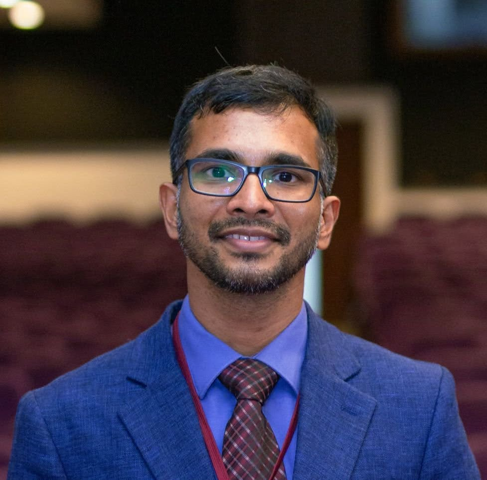

Flexible and printed electronics
Conductive inks, interconnects, device fabrication and reliability on flexible substrates.
Professor in Physics · University of Colombo
I am a physicist working at the intersection of applied optics, printed and flexible electronics, experimental instrumentation, and the broader responsibilities of higher education.
Discover my research About me
From ultrafast laser physics to flexible electronic devices, my work is shaped by experimental inquiry and the ambition to make advanced technologies more accessible.
Conductive inks, interconnects, device fabrication and reliability on flexible substrates.
Laser processing, graphene oxide reduction, photonics and non-linear optics.
Affordable sensing platforms, energy harvesting and experimental systems.
Physics, electronics, measurement systems, communication and laboratory-based learning.
Open and distance learning, quality assurance, accessibility and institutional development.
Sinhala poetry and reflections on time, memory, nature and the meeting of art and physics.
TWAS support for a microfluidic sweat patch and NSF funding for printed flexible EMI shielding.
NRC-funded work on physically unclonable functions using graphene-based inks.
Publications across nonlinear optics, additive manufacturing, electronics and reliability.